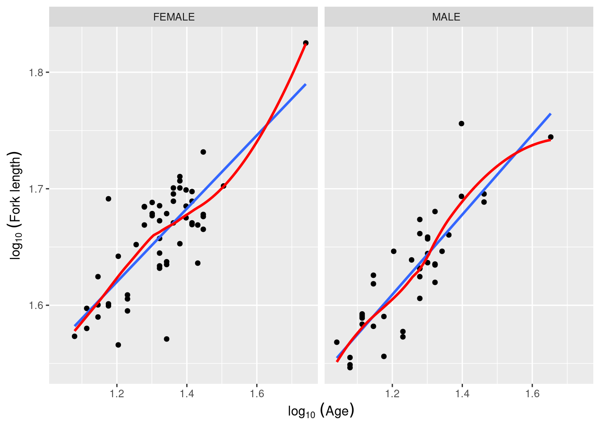
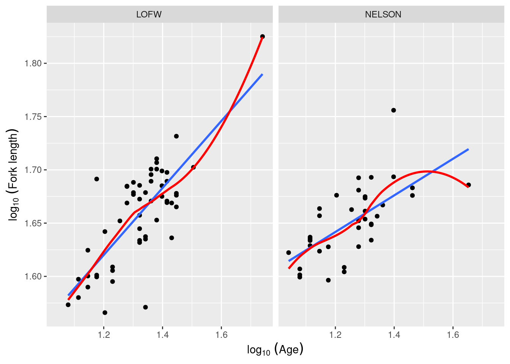

After competing this laboratory exercise, you should be able to:
Use R to do an analysis of covariance (ANCOVA) and interpret statistical models that have both continuous and categorical independent variables LMs
Use R to test the assumptions underlying LMs
Use R to compare model fits
Use R to do bootstrap and permutation tests on LM type models including both continuous and categorical independent variables.
8.1 R packages and data
This laboratory requires the following:
R packages:
ggplot2
car
lmtest
data files
anc1dat.csv
anc3dat.csv
8.2 Linear models
GLM sometimes stands for General Linear Model, however, it is much more frequently used for Generalized linear models. Thus I always rather talk about Linear models or LMs instead of General linear models to avoid confusion in the acronym. LMs are statistical models that can be written as \(Y = XB + E\), where Y is a vector (or matrix) containing the dependent variable, X is a matrix of independent variables, B is a matrix of estimated parameters, and E is the vector (or matrix) of independent, normally distributed and homoscedastic residuals. All tests we have seen to date (t-test, simple linear regression, One-Way ANOVA, Multiway ANOVA, and multiple regression) are LMs. Note that all models we have encountered until now contain only one type of variable (either continuous or categorical) as independent variables. In this laboratory exercise, you will fit models that have both type of independent variables. These models are also LMs.
8.3 ANCOVA
ANCOVA stands for Analysis of Covariance. It is a type of LM where there is one (or more) continuous independent variable (sometimes called a covariate) and one (or more) categorical independent variable. In the traditional treatment of ANCOVA in biostatistical textbooks, the ANCOVA model does not contain interaction terms between the continuous and categorical independent variables. Hence, the traditional ANCOVA analysis assumes that there is no interaction, and is preceeded by a test of significance of interactions, equivalent to testing that the slopes (coefficients for the continuous independent variables) do not differ among level of the categorical independent variables (a test for homogeneity of slopes). Some people, me included, use the term ANCOVA a bit more loosely for any LM that involves both continuous and categorical variables. Be aware that, depending on the author, ANCOVA may refer to a model with or without interaction terms.
8.4 Homogeneity of slopes
In many biological problems, a question arises as to whether the slopes of two or more regression lines are significantly different; for example, whether two different insecticides differ in their efficacy, whether males and females differ in their growth curves, etc. These problems call for direct comparisons of slopes. GLMs (ANCOVAs) can test for equality of slopes (homogeneity of slopes).
Remember that there are two parameters that describe a regression line, the intercept and the slope. The ANCOVA model (sensu stricto) tests for homogeneity of intercepts, but the starting point for the analysis is a test for homogeneity of slopes. This test can be performed by fitting a model with main effects for both the categorical and continuous independent variables, plus the interaction term(s), and testing for significance of the addition of the interaction terms.
8.4.1 Case 1 - Size as a function of age (equal slopes example)
Exercise
Using the file anc1dat.csv , test the hypothesis that female and male sturgeon at The Pas over the years 1978-1980 have the same observed growth rate, defined as the slope of the regression of log10 of fork length, lfkl , on the log10 age, lage .
First, let’s have a look at the data. It would help to draw the regression line and a lowess trace to better assess linearity. Being fancy, one could also use more of R magic to spruce up the axis legends (note the use of expression() to get subscripts):
anc1dat<-read.csv("data/anc1dat.csv")anc1dat$sex<-as.factor(anc1dat$sex)myplot<-ggplot(data =anc1dat, aes(x =lage, y =log10(fklngth)))+facet_grid(.~sex)+geom_point()myplot<-myplot+stat_smooth(method =lm, se =FALSE)+stat_smooth(se =FALSE, color ="red")+labs( y =expression(log[10]~(Fork~length)), x =expression(log[10]~(Age)))myplot

Sturgeon length as a function of age
The log-log transformation makes the relationship linear and, at first glance, there is no issues with assumptions of LMs (although this should be confirmed by appropriate examination of the residuals). Let’s fit the full model with both main effects and the interaction:
model.full1<-lm(lfkl~sex+lage+sex:lage, data =anc1dat)Anova(model.full1, type =3)
Anova Table (Type III tests)
Response: lfkl
Sum Sq Df F value Pr(>F)
(Intercept) 0.64444 1 794.8182 < 2.2e-16 ***
sex 0.00041 1 0.5043 0.4795
lage 0.07259 1 89.5312 4.588e-15 ***
sex:lage 0.00027 1 0.3367 0.5632
Residuals 0.07135 88
---
Signif. codes: 0 '***' 0.001 '**' 0.01 '*' 0.05 '.' 0.1 ' ' 1
In the previous output, on line 4, 0.5632277 is the probability of observing an lage:sex interaction this strong or stronger under the null hypothesis that slope of the relationship between fork length and age does not vary between the sexes, or equivalently that the difference in fork length between males and females (if it exists) does not vary with age (and providing the assumptions of the analysis have been met).
Note that I used the Anova() function with an uppercase “a” (from the car library) instead of the “built in” anova() (with a lowercase “a”) command to get the results using Type III sums of squares. The type III (partial) sums of squares are calculated as if each variable was the last entered in the model and correspond to the difference in explained SS between the full model and a reduced model where only that variable is excluded. The standard anova() function returns Type I (sequential) SS, calculated as each variable is added sequentially to a null model with only an intercept. In rare cases, the type I and type III SS are equal (when the design is perfectly balanced and there is no multicolinearity). In the vast majority of cases, they will differ, and I recommend that you always use the Type III SS in your analyses.
On the basis of this analysis, we would accept the null hypotheses that:
the slope of the regression of log(fork length) on log(age) is the same for males and females (the interaction term is not significant)
that the intercepts are also the same for the two sexes (the sex term is also not significant).
But before accepting these conclusions, we should test the assumptions in the usual way
With respect to normality, things look O.K., although there are several points in the top right corner that appear to lie off the line. We could also run a Wilk-Shapiro normality test and find W = 0.9764, p = 0.09329, also suggesting this assumption is valid. Homoscedasticity seems fine too, but if you want further evidence of this, you can run one of the tests. Here I use the Breusch-Pagan test, which is appropriate when some of the independent variables are continuous (Levene’s test is for categorical independent variables only):
bptest(model.full1)
studentized Breusch-Pagan test
data: model.full1
BP = 0.99979, df = 3, p-value = 0.8013
Since the null is that the residuals are homoscedastic, and p is rather large, the test confirm the visual assessment.
Further, there is no obvious pattern in the residuals, which implies there is no problem with the assumption of linearity. This too can be formally tested:
resettest(model.full1, power =2:3, type ="regressor", data =anc1dat)
The last assumption in this sort of analysis is that the covariate (in this case, lage ) has no measurement error. We really have no way of knowing whether this assumption is justified, although multiple aging of fish by several different investigators usually gives ages that are within 1-2 years of each other, which is within the 10% considered by most to be the maximum for Type I modelling. Note that there is no “test” that you can do with the data to determine what the error is, at least in this case. If we had replicate ages for individual fish, it could be estimated quantitatively
Exercise
You will notice that there is one datum with a large studentized residual, i.e. an outlier (case 49). Eliminate this datum from your data file and rerun the analysis. Do your conclusions change?
model.full.no49<-lm(lfkl~sex+lage+sex:lage, data =anc1dat[c(-49), ])Anova(model.full.no49, type =3)
Anova Table (Type III tests)
Response: lfkl
Sum Sq Df F value Pr(>F)
(Intercept) 0.64255 1 895.9394 <2e-16 ***
sex 0.00038 1 0.5273 0.4697
lage 0.07378 1 102.8746 <2e-16 ***
sex:lage 0.00022 1 0.3135 0.5770
Residuals 0.06239 87
---
Signif. codes: 0 '***' 0.001 '**' 0.01 '*' 0.05 '.' 0.1 ' ' 1
So the conclusion does not change if the outlier is deleted (not surprising as Cook’s distance is low for this point reflecting its low leverage). Since there is no good reason to delete this data point, and since (at least qualitatively) our conclusions do not change, it is probably best to go with the full data set. A test of the assumptions for the refit model (with the outlier removed) shows that all are met, and no more outliers are detected. (I won’t report these analyses, but you can and should do them just to assure yourself that everything is O.K.)
8.4.2 Case 2 - Size as a function of age (different slopes example)
Exercise
The file anc3dat.csv records data on male sturgeon collected at two locations ( locate) , Lake of the Woods, in northwestern Ontario, and the Churchill River in northern Manitoba. Using the same procedure as outlined above (with locate as the categorical variable instead of sex ), test the null hypothesis that the slope of the regression of lfkl on lage is the same in the two locations. What do you conclude?
anc3dat<-read.csv("data/anc3dat.csv")myplot<-ggplot(data =anc3dat, aes(x =lage, y =log10(fklngth)))+facet_grid(.~locate)+geom_point()+stat_smooth(method =lm, se =FALSE)+stat_smooth(se =FALSE, color ="red")+labs( y =expression(log[10]~(Fork~length)), x =expression(log[10]~(Age)))myplot

Longueur des esturgeons en fonction de l’age d’après anc3dat
model.full2<-lm(lfkl~lage+locate+lage:locate, data =anc3dat)Anova(model.full2, type =3)
In this case, we reject the null hypotheses that (1) the slopes of the regressions are the same in the two locations; and (2) that the intercepts are the same in the two locations. In other words, if we want to predict the fork length of a sturgeon of a particular age (accurately) we need to know from which location it came. The fact that we reject the null hypothesis that the slopes of the lfkl - lage regressions are the same in both locations means that we should be doing individual regressions for each location separately (that is in fact what the full model is fitting). But we are jumping the gun here. Before you can trust these p values, you need to confirm that assumptions are met:
If you analyze the residuals (in the way described above), you will find that there is no problem with the linearity assumption, nor the homoscedasticity assumption (BP = 1.2267, p = 0.268). However, Wilk-Shapiro test of normality of residuals is suspicious (W=0.97, p = 0.03). Given the relatively large sample size (\(N = 92\)), this normality test has high power and the magnitude of deviation from normality does not appear to be large. Considering the robustness of GLM to non-normality with large samples, we should not be overly concerned with this violation.
Given that the assumptions appear sufficiently met, we can accept the results as calculated by R. All terms in the model are significant (location, lage, and the interaction). This full model is equivalent to fitting separate regressions for each location. To get the coefficients of these regression, one can either fit the two regressions on data subsets for each location, or extract the fitted coefficients from the full model:
model.full2
Call:
lm(formula = lfkl ~ lage + locate + lage:locate, data = anc3dat)
Coefficients:
(Intercept) lage locateNELSON
1.2284 0.3253 0.2207
lage:locateNELSON
-0.1656
By default, the variable locate in the model is internally encoded as 0 for the location that comes first alphabetically (LofW) and 1 for the other (Nelson). So the regression equations for each location become:
For LofW: \[\begin{aligned}
lfkl &= 1.2284 + 0.3253 \times lage + 0.2207 \times 0 - 0.1656 \times 0 \times lage \\
&= 1.2284 + 0.3253 \times lage
\end{aligned}\]
For Nelson: \[\begin{aligned}
lfkl &= 1.2284 + 0.3253 \times lage + 0.2207 \times 1 - 0.1656 \times 1 \times lage \\
&= 1.4491 + 0.1597 \times lage
\end{aligned}\]
You can convince youself that this is the same as fitting 2 regressions separately.
by(anc3dat, anc3dat$locate, function(x)lm(lfkl~lage, data =x))
anc3dat$locate: LOFW
Call:
lm(formula = lfkl ~ lage, data = x)
Coefficients:
(Intercept) lage
1.2284 0.3253
------------------------------------------------------------
anc3dat$locate: NELSON
Call:
lm(formula = lfkl ~ lage, data = x)
Coefficients:
(Intercept) lage
1.4491 0.1597
8.5 The ANCOVA model
If the test for homogeneity of slopes indicates that the two or more slopes are not significantly different, i.e. there is no significant interaction between the categorical and continuous variable, then a single slope parameter can be fit. How about the intercepts? Do they differ among levels of the categorical variable? There are two school of thoughts on how to proceed to test for equality of intercepts when slopes are equal:
The old school fits a reduced model, with the categorical and continuous variables, but no interactions (this is the ANCOVA model, sensus stricto) and uses the partitioned sums of squares to test for significance, say with the Anova() function. This approach is the one presented in many statistical textbooks.
Others simply use the full model results, and test significance of each term from the partial sums of squares. This approach has the advantage of being faster as only one model needs to be fitted to make all inferences. However, this approach is less powerful.
In most practical cases, it does not matter unless one has very complex models with a large number of terms and higher level interactions and that many of these terms are not significant. My suggestion is that you use the faster approach first, and use the traditional approach only when you accept the null hypothesis for equal intercepts. Why? Since the faster approach is less powerful, if you nevertheless reject H0, then this conclusion will not be changed, only reinforced, by using the traditional approach.
Here I will compare the old school and the other approach. Recall that we want to assess equality of intercepts once we determined that slopes are equal. Test for equality of intercepts when slopes differ (or, if you prefer, when there is a significant interaction) are rarely directly meaningful, are often misinterpreted, and should rarely be conducted.
Going back to anc1dat.csv, comparing the relationships between lfkl and lage among sexes, we obtained the following results for the full model with interactions
Anova(model.full1, type =3)
Anova Table (Type III tests)
Response: lfkl
Sum Sq Df F value Pr(>F)
(Intercept) 0.64444 1 794.8182 < 2.2e-16 ***
sex 0.00041 1 0.5043 0.4795
lage 0.07259 1 89.5312 4.588e-15 ***
sex:lage 0.00027 1 0.3367 0.5632
Residuals 0.07135 88
---
Signif. codes: 0 '***' 0.001 '**' 0.01 '*' 0.05 '.' 0.1 ' ' 1
We already concluded that the slope of the regression for males and females does not differ (the interaction sex:lage is not significant). Note that the p-values associated with sex (0.4795) is not significant either.
For the old-school approach, one would fit a reduced model (the sensus stricto ANCOVA model):
model.ancova<-lm(lfkl~sex+lage, data =anc1dat)Anova(model.ancova, type =3)
Anova Table (Type III tests)
Response: lfkl
Sum Sq Df F value Pr(>F)
(Intercept) 1.13480 1 1410.1232 <2e-16 ***
sex 0.00149 1 1.8513 0.1771
lage 0.14338 1 178.1627 <2e-16 ***
Residuals 0.07162 89
---
Signif. codes: 0 '***' 0.001 '**' 0.01 '*' 0.05 '.' 0.1 ' ' 1
Call:
lm(formula = lfkl ~ sex + lage, data = anc1dat)
Residuals:
Min 1Q Median 3Q Max
-0.093992 -0.018457 -0.000876 0.022491 0.081161
Coefficients:
Estimate Std. Error t value Pr(>|t|)
(Intercept) 1.225533 0.032636 37.552 <2e-16 ***
sexMALE -0.008473 0.006228 -1.361 0.177
lage 0.327253 0.024517 13.348 <2e-16 ***
---
Signif. codes: 0 '***' 0.001 '**' 0.01 '*' 0.05 '.' 0.1 ' ' 1
Residual standard error: 0.02837 on 89 degrees of freedom
Multiple R-squared: 0.696, Adjusted R-squared: 0.6892
F-statistic: 101.9 on 2 and 89 DF, p-value: < 2.2e-16
According to this test, sex is not significant and therefore we can conclude that the intercept does not vary significantly between males and females. Note that the p-value is lower this time (0.1771 vs 0.4795), reflecting the higher power of this old-school approach. However, the conclusion remains qualitatively the same: intercepts do not differ.
So we accept the null hypothesis that the intercepts are the same for the two sexes. Running the residual diagnostics, we find no problems with linearity, independence, homogeneity of variances, and normality.
Exercise
You will notice, in the above analysis that the residuals plots flag three data points (cases 19, 49, and 50) as having high residuals. These points are a bit worrisome, and may be having a disproportionate effect on your analysis. Eliminate these “outliers” and re-run the analysis. Now what do you conclude?
model.ancova.nooutliers<-lm(lfkl~sex+lage, data =anc1dat[c(-49, -50, -19), ])Anova(model.ancova.nooutliers, type =3)
Anova Table (Type III tests)
Response: lfkl
Sum Sq Df F value Pr(>F)
(Intercept) 1.09160 1 1896.5204 < 2e-16 ***
sex 0.00232 1 4.0374 0.04764 *
lage 0.13992 1 243.0946 < 2e-16 ***
Residuals 0.04950 86
---
Signif. codes: 0 '***' 0.001 '**' 0.01 '*' 0.05 '.' 0.1 ' ' 1
Call:
lm(formula = lfkl ~ sex + lage, data = anc1dat[c(-49, -50, -19),
])
Residuals:
Min 1Q Median 3Q Max
-0.058397 -0.018469 -0.000976 0.020696 0.040288
Coefficients:
Estimate Std. Error t value Pr(>|t|)
(Intercept) 1.224000 0.028106 43.549 <2e-16 ***
sexMALE -0.010823 0.005386 -2.009 0.0476 *
lage 0.328604 0.021076 15.591 <2e-16 ***
---
Signif. codes: 0 '***' 0.001 '**' 0.01 '*' 0.05 '.' 0.1 ' ' 1
Residual standard error: 0.02399 on 86 degrees of freedom
Multiple R-squared: 0.7706, Adjusted R-squared: 0.7653
F-statistic: 144.4 on 2 and 86 DF, p-value: < 2.2e-16
Well, well. Now we would, according to convention, reject the null hypothesis, and conclude that in fact, the intercepts of the regressions for the two sexes are different! This is a qualitatively different result from that obtained using all the data. Why? There are two possible reasons:
the “outliers” have significant impacts on the fitted regression lines, so that the intercepts of the lines change depending on whether the “outliers” are included (or not);
the exclusion of the outliers increases the precision, i.e. reduces the standard error of the intercept estimates, and therefore increases the likelihood that the two intercepts will in fact be “statistically” different.
is unlikely, since none of the outliers had high leverage (hence Cook’s distances were not large), so (2) is more likely, and you can verify this by fitting separate regressions for each sex with and without these three outliers. If you do, you will notice that the estimated intercepts for each sex do not change very much, but the standard errors of these intercepts change quite a lot.
Exercise
Fit separate regresssions by sex with vs. without the outliers. Pay attention to the intercepts.
Including all data.
by(anc1dat,anc1dat[, "sex"],function(x){summary(lm(lfkl~lage, data =x))})
anc1dat[, "sex"]: FEMALE
Call:
lm(formula = lfkl ~ lage, data = x)
Residuals:
Min 1Q Median 3Q Max
-0.093728 -0.020510 -0.000618 0.024066 0.078844
Coefficients:
Estimate Std. Error t value Pr(>|t|)
(Intercept) 1.24264 0.04660 26.664 < 2e-16 ***
lage 0.31431 0.03512 8.949 4.16e-12 ***
---
Signif. codes: 0 '***' 0.001 '**' 0.01 '*' 0.05 '.' 0.1 ' ' 1
Residual standard error: 0.03011 on 52 degrees of freedom
Multiple R-squared: 0.6063, Adjusted R-squared: 0.5987
F-statistic: 80.09 on 1 and 52 DF, p-value: 4.16e-12
------------------------------------------------------------
anc1dat[, "sex"]: MALE
Call:
lm(formula = lfkl ~ lage, data = x)
Residuals:
Min 1Q Median 3Q Max
-0.046663 -0.014875 -0.004275 0.013489 0.078910
Coefficients:
Estimate Std. Error t value Pr(>|t|)
(Intercept) 1.19730 0.04209 28.45 < 2e-16 ***
lage 0.34300 0.03337 10.28 2.97e-12 ***
---
Signif. codes: 0 '***' 0.001 '**' 0.01 '*' 0.05 '.' 0.1 ' ' 1
Residual standard error: 0.02594 on 36 degrees of freedom
Multiple R-squared: 0.7458, Adjusted R-squared: 0.7388
F-statistic: 105.6 on 1 and 36 DF, p-value: 2.972e-12
Difference in intercept is indeed really small. Now let’s have a look when we exclude outliers.
by(anc1dat,anc1dat[, "sex"],function(x){summary(lm(lfkl~lage, data =x[c(-49, -50, -19), ]))})
anc1dat[, "sex"]: FEMALE
Call:
lm(formula = lfkl ~ lage, data = x[c(-49, -50, -19), ])
Residuals:
Min 1Q Median 3Q Max
-0.092746 -0.020176 -0.000078 0.023779 0.079995
Coefficients:
Estimate Std. Error t value Pr(>|t|)
(Intercept) 1.24029 0.04815 25.760 < 2e-16 ***
lage 0.31533 0.03614 8.724 1.53e-11 ***
---
Signif. codes: 0 '***' 0.001 '**' 0.01 '*' 0.05 '.' 0.1 ' ' 1
Residual standard error: 0.03021 on 49 degrees of freedom
Multiple R-squared: 0.6083, Adjusted R-squared: 0.6003
F-statistic: 76.11 on 1 and 49 DF, p-value: 1.526e-11
------------------------------------------------------------
anc1dat[, "sex"]: MALE
Call:
lm(formula = lfkl ~ lage, data = x[c(-49, -50, -19), ])
Residuals:
Min 1Q Median 3Q Max
-0.047429 -0.012818 -0.005274 0.013495 0.077538
Coefficients:
Estimate Std. Error t value Pr(>|t|)
(Intercept) 1.19361 0.04188 28.50 < 2e-16 ***
lage 0.34662 0.03325 10.42 2.83e-12 ***
---
Signif. codes: 0 '***' 0.001 '**' 0.01 '*' 0.05 '.' 0.1 ' ' 1
Residual standard error: 0.02574 on 35 degrees of freedom
Multiple R-squared: 0.7563, Adjusted R-squared: 0.7494
F-statistic: 108.6 on 1 and 35 DF, p-value: 2.835e-12
Differences in intercepts are really small and similar than in previous models but now the precision (i.e. standard error) is much smaller for the models without outliers.
It is often the case that by eliminating outliers, new outliers appear. This is simply because the “outlier” designation is usually based on a standardized residual: if you eliminate a couple of outliers, then the residual sums of squares decreases, i.e. the “average” (absolute) residual decreases. Thus, points which were not “far from the average” when the original average residual was comparatively large (i.e. were not “outliers”), may now become so because the average residual has been decreased. Remember also that as you eliminate outliers, N decreases, and the increase in R2 may be more than compensated for by decreased power. So be wary of eliminating outliers!
8.6 Comparing model fits
As we have just seen, the process of fitting models to data is usually an iterative one. That is, there are, more often than not, several competing models that may be used to fit the data and it is left to the analyst to decide which model best balances goodness of fit (which we are usually trying to maximize) and complexity (which we are usually trying to minimize). In general, the strategy to use in regression and anova is to choose a simpler model when doing so does not reduce the goodness-of-fit by a significant amount. R can compute an F-statistic to compare the fit of two models. The null hypothesis in this situation is that there is no difference in goodness of fit between the models.
Exercise
Working with the Anc1dat data set, compare the fit of the ANCOVA and common simple regression models::
model.linear<-lm(lfkl~lage, data =anc1dat)anova(model.ancova, model.linear)
Analysis of Variance Table
Model 1: lfkl ~ sex + lage
Model 2: lfkl ~ lage
Res.Df RSS Df Sum of Sq F Pr(>F)
1 89 0.071623
2 90 0.073113 -1 -0.0014899 1.8513 0.1771
The anova() function can compare the differences in sum of squares and degrees of freedom between the simpler and more complex models, takes the ratio of these two values to generate a mean square, and divides this by the mean square of the more complex model to generate an F-statistic. In the above case, there is insufficient evidence to reject the null hypothesis and we conclude that the simpler model, which is the simple linear regression, is the best model for these data. (Because these models differ by only the presence vs. absence of a single factor (sex), the P-value is the same as the p-value for sex in model 1.)
Exercise
Repeat the above procedure with the ANC3DAT data, rerunning the full ANCOVA with interaction ( lfkl ~ lage + locate + lage:locate ) and without interaction ( lfkl ~ lage + locate ), saving the model objects as you did above. Compare the fits of the two models. What do you conclude?
model.full.anc3dat<-lm(lfkl~lage+locate+lage:locate, data =anc3dat)model.ancova.anc3dat<-lm(lfkl~lage+locate, data =anc3dat)anova(model.full.anc3dat, model.ancova.anc3dat)
Analysis of Variance Table
Model 1: lfkl ~ lage + locate + lage:locate
Model 2: lfkl ~ lage + locate
Res.Df RSS Df Sum of Sq F Pr(>F)
1 88 0.051358
2 89 0.060448 -1 -0.0090901 15.575 0.0001592 ***
---
Signif. codes: 0 '***' 0.001 '**' 0.01 '*' 0.05 '.' 0.1 ' ' 1
In this case there is sufficient evidence to reject the null hypothesis and conclude that the full model with interaction is the best model to fit to the Anc3dat data. This is as we expected, given the fact that we found the interaction to be significant the in original analysis of the data. While no new information is gain from this model comparison in this case, this approach can be more usefully employed to compared nested models that differ in more than one term.
8.7 Bootstrap
################################################################### Bootstrap analysis## Bootstrap analysis BCa confidence intervals# Preferable when parameter distribution is far from normal# Bootstrap 95% BCa CI for regression coefficientslibrary(boot)# To simplify future modifications of the code in this file,# copy the data to a generic mydata dataframemydata<-anc3dat# create a myformula variable containing the formula for the model to be fittedmyformula<-as.formula(lfkl~lage+locate+lage:locate)# function to obtain regression coefficients for each iterationbs<-function(formula, data, indices){d<-data[indices, ]fit<-lm(formula, data =d)return(coef(fit))}# bootstrapping with 1000 replicationsresults<-boot(data =mydata, statistic =bs, R =1000, formula =myformula)# view resultsresultsboot_res<-summary(results)rownames(boot_res)<-names(results$t0)boot_resop<-par(ask =TRUE)for(iin1:length(results$t0)){plot(results, index =i)title(names(results$t0)[i])}par(op)# get 95% confidence intervalsfor(iin1:length(results$t0)){cat("\n", names(results$t0)[i], "\n")print(boot.ci(results, type ="bca", index =i))}
8.8 Permutation test
####################################################################### Permutation test## using lmperm library# To simplify future modifications of the code in this file,# copy the data to a generic mydata dataframemydata<-anc3dat# create a myformula variable containing the formula for the# model to be fittedmyformula<-as.formula(lfkl~lage+locate+lage:locate)require(lmPerm2)# Fit desired model on the desired dataframemymodel<-lm(myformula, data =mydata)# Calculate p-values for each term by permutation# Note that lmp centers numeric variable by default, so to# get results that are# consistent with standard models, it is necessary to set# center=FALSEmymodelProb<-lmp(myformula, data =mydata, center =FALSE, perm ="Prob")summary(mymodel)summary(mymodelProb)